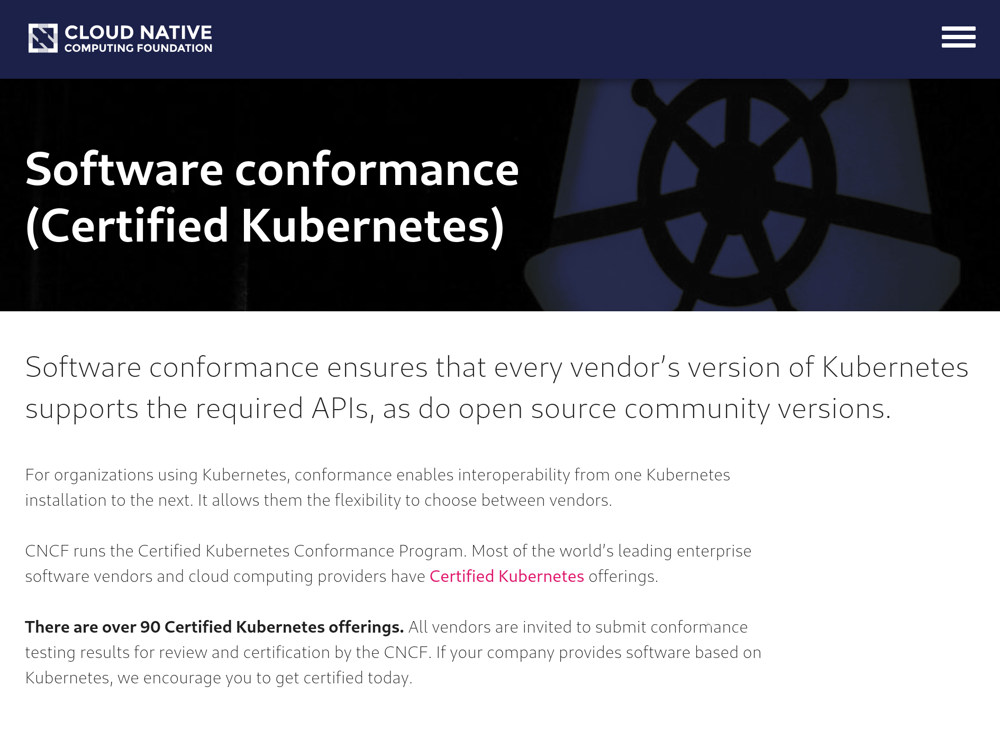
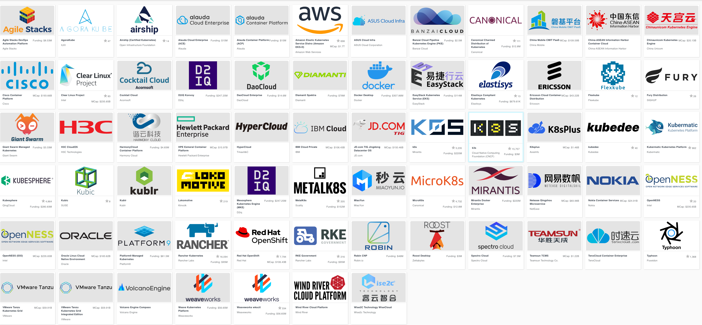
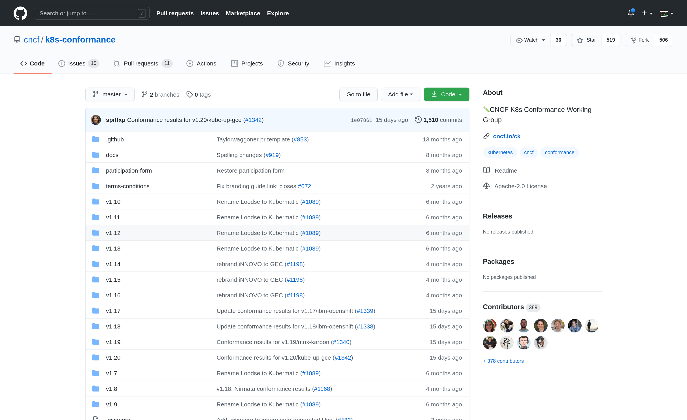
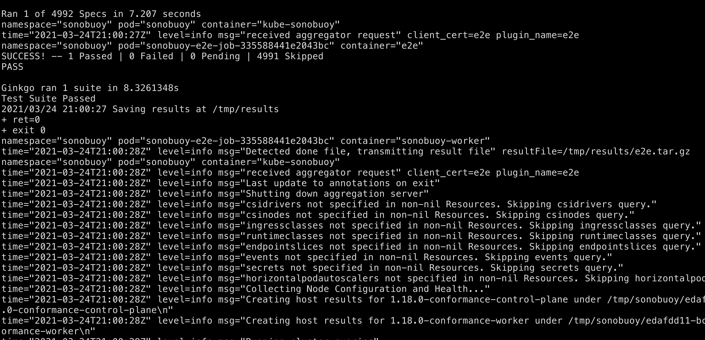
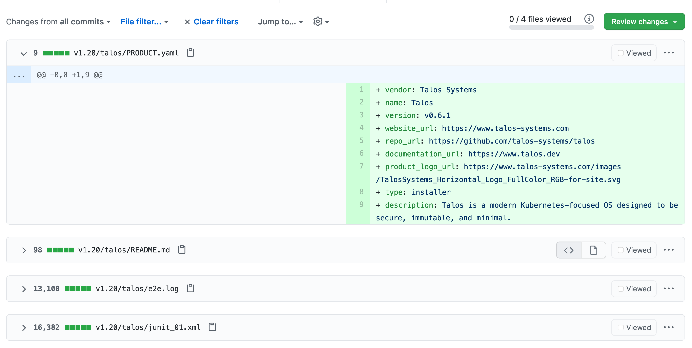
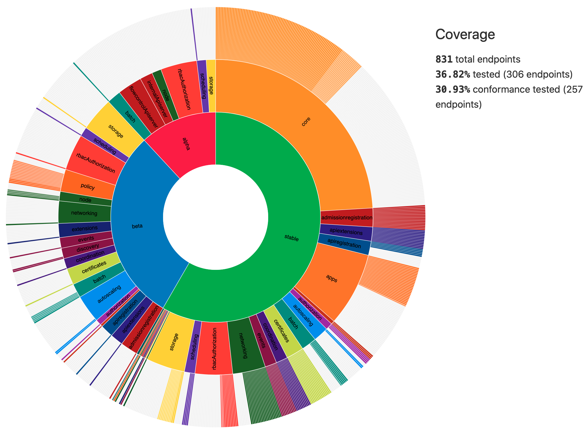
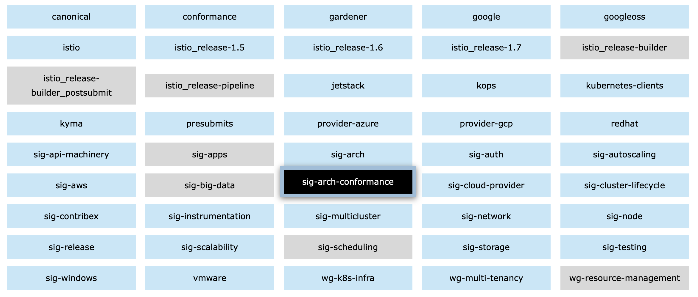
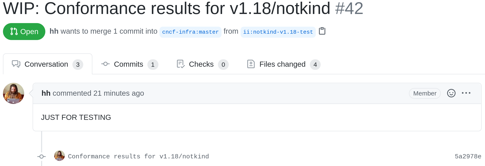
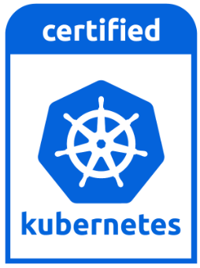

Contributing to Kubernetes Conformance Coverage
ii
Created: 2021-08-31 Tue 16:02
About ii
Technical Folks in New Zealand
People
- Hippie Hacker
- Caleb Woodbine
- Zach Mandeville
- Stephen Heywood
- Berno Kleinhans
- Riaan Kleinhans
- Brenda Peel
Kubernetes Conformance
What is Kubernetes Conformance?
CNCF Kubernetes Conformance ensures
… that every vendor’s version of Kubernetes supports the required APIs, as do open source community versions
Why is Kubernetes Conformance important?
- portability of workloads
- stable APIs behave the same everywhere
- freedom from vendor lock-in
- consistency with APIs
Conformance website

TODO Who can meet your k8spectations?
Currently, there are 67 certified distributions.

Click Certified K8s/KCSP/KTP link on the left
k8s-conformance repo
https://github.com/cncf/k8s-conformance

Conformance as Code
- defined through the API and a test suite
- allows for tools to be built that fit within k8s workflows
- two examples: Sonobuoy and APISnoop
Certifying Distributions with Sonobuoy
Deploy Sonobuoy
Build sonobuoy
go get -u -v github.com/vmware-tanzu/sonobuoy@latest
deploy to your cluster
sonobuoy run --mode=certified-conformance
view test logs
sonobuoy logs

Check if sonobuoy is done
Check status, and look for complete
sonobuoy status

Get Results
outfile=$(sonobuoy retrieve)
mkdir ./results; tar xzf $outfile -C ./results
./results/global
./results/global/junit_01.xml
./results/global/e2e.log
Submit PR
- fork k8s conformance repo and open PR
- In PR, include output logs and a product.yaml file
- Complete instructions at github.com/cncf/k8s-conformance
Example Pull Request

Files Changed

Tooling that makes the difference
Goals
APISnoop is designed to help:
- Identify gaps in coverage
- Close these gaps with tests
- Prevent new gaps from happening
Taking Snoop for a test drive in kind
Launching
git clone https://github.com/cncf/apisnoop
cd apisnoop/kind
kind create cluster --image kindest/node:v1.22.1 --config kind+apisnoop.yaml
Creating cluster "kind" ... • Ensuring node image (kindest/node:v1.22.1) 🖼 ... ✓ Ensuring node image (kindest/node:v1.22.1) 🖼 • Preparing nodes 📦 📦 ... ✓ Preparing nodes 📦 📦 • Writing configuration 📜 ... ✓ Writing configuration 📜 • Starting control-plane 🕹️ ... ✓ Starting control-plane 🕹️ • Installing CNI 🔌 ... ✓ Installing CNI 🔌 • Installing StorageClass 💾 ... ✓ Installing StorageClass 💾 • Joining worker nodes 🚜 ... ✓ Joining worker nodes 🚜 Set kubectl context to "kind-kind" You can now use your cluster with: kubectl cluster-info --context kind-kind Have a nice day! 👋
Discovering untested endpoints
export HOST="${HOST:-localhost}"
psql -U apisnoop -d apisnoop -h $HOST -c "
SELECT
endpoint,
kind
FROM testing.untested_stable_endpoint
WHERE
eligible is true
AND
category = 'core'
ORDER BY
kind, endpoint desc
LIMIT 5;"
endpoint | kind
--------------------------------------+------------
createcorev1namespacedpodbinding | binding
createcorev1namespacedbinding | binding
replacecorev1namespacedevent | event
patchcorev1namespacedlimitrange | limitrange
listcorev1limitrangeforallnamespaces | limitrange
(5 rows)
an example (1/2)
create a namespace
kubectl create ns kubecon-na-2021
namespace/kubecon-na-2021 created
an example (2/2)
snooping on your own cluster, with postgresql!
export host="${host:-localhost}"
psql -u apisnoop -d apisnoop -h $host -c "
select distinct endpoint
from testing.audit_event
where endpoint ilike 'space%'
and useragent like 'kubectl/v1.21.2%'
order by endpoint;"
endpoint
-----------------------------
createcorev1namespace
listcorev1namespacedservice
(4 rows)
Why is this important?
Identifying Gaps
TODO UPDATE IMAGE apisnoop.cncf.io

Closing gaps in Kubernetes Conformance Coverage
DEMO
Preventing gaps in Kubernetes Conformance Coverage
testgrid.k8s.io

sig-arch / conformance prow jobs
kubernetes/test-infra config/jobs/kubernetes/sig-arch

apisnoop-conformance-gate
Eventually Release Blocking Conformance Job
Any new gaps in coverage are detected

Summary
To reduce gaps in Kubernetes Conformance Coverage
- Identify
- using apisnoop.cncf.io + snoopdb
- Close
- Write and promote tests
- Prevent
- Release blocking jobs
Verifying Conformance Submissons
Results submitted

CNCF CI comments

Informational labels

Certified distributions

Certified Logo (tm)

Q&A
Software used in this talk
- Linux
- OBS
- Systemd
- Kubernetes
- Pair
- tmate
- Chromium
- Firefox
- go-http-server
- Cert-Manager
- External-DNS
- PowerDNS
- nginx-ingress
- Humacs
reset
- reset branch
cd ~/apisnoop/docs/presentations/k8s-conformance git push ii :notkind-v1.18 - delete k8s-conformance folder
rm -rf ~/apisnoop/docs/presentations/k8s-conformance - delete k8s-conformance folder
rm -rf ~/apisnoop/docs/presentations/v1.*/ - Remove sonobuoy
kubectl -n sonobuoy delete pod sonobuoy
target tmate
tmate -S /tmp/kubecon
STOW In Cluster Interfacing
export PGUSER=apisnoop PGHOST=localhost
psql -c "select distinct useragent \
from testing.audit_event \
where useragent not ilike 'kube-%';"
useragent
----------------------------------------------------------------
kubelet/v1.18.0 (linux/amd64) kubernetes/9e99141
kindnetd/v0.0.0 (linux/amd64) kubernetes/$Format
sonobuoy/v0.0.0 (darwin/amd64) kubernetes/$Format
kubectl/v1.19.2 (darwin/amd64) kubernetes/f574309
coredns/v0.0.0 (linux/amd64) kubernetes/$Format
local-path-provisioner/v0.0.0 (linux/amd64) kubernetes/$Format
(6 rows)
Auditing the OpenAPI
- APIServer can be configured to log usage
- Combining an AuditPolicy and AuditSink
- Usage is logged into SnoopDB in a cluster
SnoopDB in cluster
- Identify in Cluster Usage
- Focus on hitting Gaps in API